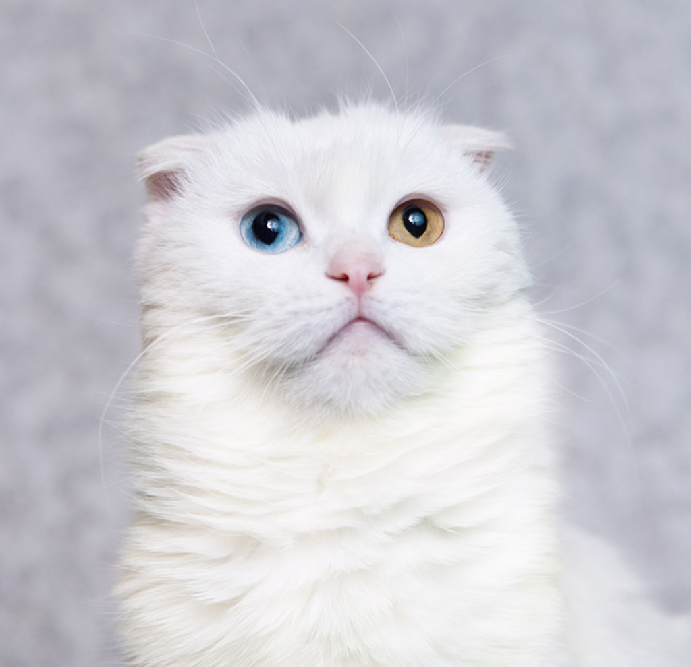

Даддитс
Ласковый обнимака пушистый рыжий Даддитс. Мраморный красавец Даддитс - совершенно
обнимательный и тискательный кот.
Тёплая шубка, тёплый взгляд, самое тёплое отношение к людям. Очень любит ласку, радуется, когда гладят, берут на
руки,
сам с удовольствием всегда устроится рядышком с хозяйкой. Он может стать настоящим другом и взрослым и детям.
Даддитсу 2
года, он кастрирован, хорошо воспитан, привык жить в домашних условиях. Ищем ему хороших хозяев.

Заюшка
Фото очень говорящие и раскрывают всю её суть - спокойная, добрая, несчастная кошка
трудной
судьбы. Молодая. Глаз
кривоватый от "хорошей" уличной жизни, на мордочке пятно - словно испачкано, но это такая расцветка. Будто сама
природа
создала её золушкой.
Заюшка очень ласковая, трогательная и ручная. Очень любит греться на солнышке. И почти так же сильно - сидеть на
руках и
прижиматься к человеку. Девочка ждёт свою семью. Сетки антикошка на окнах обязательны.
Манон
Красивая, умная, изящная кошка редкого голубокремового окраса. Обладает самыми
прекрасными
в мире изумрудными глазами,
глубокими, как озера. Ласковая в меру, с чувством собственного достоинства. Манон пережила сложный перелом лапы,
поэтому
немного прихрамывает. Лапа полностью вылечена, операцию делал один из лучших хирургов. Манон 2 года, она
стерилизована,
хорошо воспитана. Больше всего Манон любит сырое мясо. Консерву тоже уважает. Лоток знает прекрасно, ничего не
дерет, не
сшибает, на занавесках не висит. Отдаем в добрые, надежные руки. Сетки антикошки на окнах обязательны.
Барсучок
Котик, которого вместе с кошкой Катей забрали из квартиры бабушки, надолго и серьёзно
пропавшей в больницу. Если Катя
вполне ок в силу молодости, то у Барсучка во рту было такое, как будто в рот заливали кипяток. Гнили зубки,
причиняя ему
неимоверные страдания и лишив его к моменту переезда к нам возможности есть даже мягкую пищу... Это был тощий,
всклокоченный, больной кот, сидевший в позе воробышка под дождём, с заплывшими глазами и текущей слюной...
Барсучка пролечили (там, конечно, и жкт, и почки были проблемные) в Клыке и удалили ему проблемные зубы. Сейчас
Барсучок
чувствует себя несравнимо лучше и даже начал играть. Набрал вес и стал красивым. Спокойный и добрый по
характеру,
отзывчивый на внимание и ласку, котик полностью доверяет людям, всегда жил в домашних условиях, готов
подружиться со
всеми членами вашей семьи. Умеет стоять на задних лапках. Из особенностей здоровья - нет большинства зубов, что
не
мешает ему кушать с аппетитом. В остальном - здоров, обследован в хорошей ветклинике и собирается прожить ещё
долго на
радость хозяевам. Барсучку 5+ лет, он кастрирован, прекрасно воспитан. Очаровательный джентльмен средних лет,
обладатель
дымчатой пушистой шубки, милый и ласковый кот ищет доброго и ответственного хозяина.
Загрейка
Загрейка очень ласковая молодая кошка, особенная (почти слепая). Её нашёл случайный
прохожий в ужасном состоянии и
принёс в клинику, где врачи установили, что кошка упала с высоты. Загрейке досталось много испытаний, боли,
длительное
лечение, но... Кошки - удивительные создания. Пережив страх, боль, потеряв зрение эта малышка осталась
необыкновенно
нежной и ласковой... Поэтому у неё такое нежное и теплое имя - Загрейка. Стерилизована, к лоточку приучена.Она
немного
видит, может ориентироваться в пространстве. Лечение не требуется, всё, что было нужно - уже сделано. Маленький
комочек
добра, который согреет вашу жизнь. А ей так нужна ваша доброта, ведь она - меленькая беззащитная кошечка,
пострадавшая
от нашего жестокого мира. Если вы добрый человек - пишите! Для предварительного знакомства мы попросим заполнить
анкету,
сетки-антикошки обязательное условие.
Агнешка
Агнешку отправила к нам волонтёр Светлана из Нальчика для лечения и пристройства. Её
прооперировали в Гудвет. Удалили
зубы с одной стороны - все, кроме клыков и резцов, которые между клыками, зачистили вторую сторону и жизнь
Агнешки,
наконец, заиграла новыми красками. Ротовая полость у неё, молоденькой кошечки, всегда была плоха. Воспаленные
десны,
периодически кровь изо рта, сильный неприятный запах - в силу всего этого на робкую, добрую Агнешку в Нальчике
желающих
было ноль. Вернее, много кто льстился на красивую, похожую на лесную, кошку, но узнав, что её надо лечить,
исчезали.
Плюс Агнешку на передержке били другие кошки и она жила в тумбочке, откуда Света носила её на руках в лоток...
Здесь Агнешка живёт на нашей первой съёмной квартире и её никто не обижает. Мы боялись, что у неё синдром жертвы
и её
будут обижать везде, но нет, Агнешка стала иногда даже сама напрыгивать на кого-нибудь. Однако же по старой
памяти очень
любит находиться в укрытиях - вот так под одеялом или в платяном шкафу. Ручная, мурлыка, обнимака, очень добрая
и
робкая. Ей 3 года, стерилизована, лоток знает идеально, привита. Кушает всё, ибо в Нальчике нет возможности
кормить
кошек только мясом. Взяв Агнешку в семью, вы без преувеличения спасете ей жизнь. Антикошки на окнах обязательны.
Может,
кто-то захочет подарить ей дом?
Кум Черника
Был спасен с улицы, где его заедали насмерть блохи. Сейчас он оброс, от хорошего питания
шерсть стала шелковой и
блестящей как у норки :)) Кум Черника среднего возраста, ему около 4 лет, кастрирован, очень ласковый и
спокойный котик,
дружит с сородичами, обожает сидеть на руках и обниматься. Пристраивается добрым и ответственным людям.
Зайчонок
Дом инвалидов
Зайчонок родом из Нальчика. Двухмесячным малышом он, голодный и встрепанный, прикултыхал
к
пекарне в поисках еды, где
его на следующий же день случайно прищемили дверью. Травма крестца, одна задняя лапа и хвост на 90 процентов
мертвые.
Опорожняться сам котенок не мог. Так малыш, один-в-один похожий на лесного котенка, попал в Москву под опеку
фонда.
Здесь с помощью реабилитации ему пытались вернуть чувствительность, как вдруг в процесс вмешались непредвиденные
обстоятельства - у Зайчонка появилась громадная грыжа под хвостом. Грыжу прооперировали, хвост ампутировали. Не
успел
малыш прийти в себя после операции, как ему диагностировали начальную стадию мочекаменной болезни, прописали
лечение и
специальный корм, и, конечно же, категорический запрет на наркоз в ближайшее время. В итоге 2 месяца у Зайчонка
был
перерыв в реабилитации, и только сейчас мы возвращаемся к иглоукалыванию. Есть слабые надежды спасти почти
мертвую лапу,
однако если станет понятно, что это невозможно, то она также подлежит ампутации, тк сильно мешает ему при
передвижении,
которое у него очень похоже на заячье и которому малыш обязан своим именем.
Зефирка
Дом инвалидов
Зефирка тоже из Нальчика. Еще котенком ее сбила машина и она пролежала в придорожной
грязи,
под дождем, 3 дня,
обездвиженная, напуганная, голодная. Ее подобрала добрая женщина, принесла домой, положила в коробку, обтерла
малышку от
грязи, поставила еды и стали они вдвоем ждать чуда - вдруг откликнется кто-то из Москвы или Санкт-Петербурга,
где в
ветклиниках есть МРТ. Потому что котенок не мог даже сидеть, а в Нальчике таких могут только усыпить. Поскольку
у
Зефирки при прибытии в Москву обнаружилась сильнейшая респираторная инфекция и истощение, а экстренности в
операции тоже
не было (с момента травмы прошло больше суток), кису отправили лечиться и отъедаться в стационар. После чего
планировалось скрепить треснувший позвоночник скобами. На рентгене он выглядел как разломанная на две части
ветка.

Снежинка
Дом инвалидов
Снежинка - кошка неземной красоты. Белоснежная разноглазая вислоушка, родом из Грозного,
в
своей прежней жизни, до
перелома позвоночника, она была условно безнадзорной. То есть жила на улице, но иногда люди ее кормили. У нее не
было
даже имени, ее звали "кошка". В один непрекрасный день Снежинка, подкормившись у людей, перебегала дорогу,
торопясь к
своим новорожденным котятам, и ее сбила машина. Снежинку подобрали люди, нашли ее котят, отвели ей уголок у себя
в доме.
Котят - красивых, всех в маму - быстро разобрали, а Снежинка оказалась никому не нужна. Медленно она угасала в
своем
углу, пока к фонду не обратились чеченские волонтеры с просьбой забрать малышку хотя бы на доживание в столице
при
хороших врачах.
Солнышко
Дом инвалидов
Солнышко - потому что рыжий. Цвета тепла и счастья. Он не очень молодой кот, никто точно
не
знает, сколько ему лет, но
однозначно больше 5. Возможно, 7 или 8. Всю свою жизнь до перелома позвоночника он прожил в Урус-Мартане в
Чечне, был
бездомным, приходил подкармливаться к добрым людям. Пока однажды его не нашли обездвиженного, всего в крови.
Добрая
женщина забрала его к себе домой, и там Солнышко как-то вылежался, сначала начал садиться, а потом и потихоньку
ползать.
Но задние лапы волочились мертвыми плетьми. Кот был настолько "человечьим", так заглядывал в глаза и умел
слушать, его
было так жалко, что женщина начала искать кого-то в большом городе с хорошей ветеринарией, кто мог бы забрать
Солнышко и
попробовать поставить его на лапы. Так он попал под опеку фонда.
Мышка
Мышка - очень несчастное, пугливое создание из неблагополучной бабушкиной квартиры. Она
была подростком, когда ее оттуда
вывезли, и только сейчас, спустя год жизни на передержке при хорошем питании и ласке пришла в себя. У Мышки
полгода была
аллергическая пиодермия, но сейчас все это в прошлом и она радуется жизни. Очень любит оконный выгул. Пушистая,
красивого дымчатого цвета, миниатюрная. Антикошки на окна обязательны.
Йоу
Йоу настолько скромная и незаметная на передержке, что даже не совсем понятно, что о ней
рассказать. Кроме того, что она
очень любит человеческую ласку, тиха и неконфликтна в прайде, чистоплотная и любит консервы Animonda. Первое
время Йоу
жила на шкафу, тк после неблагополучной квартиры, где она жила в норах хлама, помещение с открытым окном,
выгулом на
нем, полностью просматриваемое, было ей страшно и непонятно. Месяца через 2 она стала спускаться со шкафа и вот
теперь
она уже совершенно карманно-ручная кошка, обыкновенной наружности, коих миллионы в этом мире, но все же
надеющаяся
чем-то выделиться, зацепить глаз и попасть в семью, где она станет любимой, ценной и уникальной. Присмотритесь к
Йоу. За
скромной внешностью прячется огромное доброе сердце.
Носик
Кошечка Носик - миниатюрная, юная (ей нет еще года), очень ласковая. Родилась у
беременной
кошки, вывезенной из
неблагополучной квартиры. Очень трогательное, нежное существо, нуждающееся во внимании и любви и недополучающее
этого,
конечно, на передержке, где таких, как она, много, а человек всего один. Обожает сидеть на оконном выгуле и
смотреть на
птичек, поэтому выгул для нее очень желателен. Антикошки необходимы. Кушает мясной корм, сырую говядину, курицу.